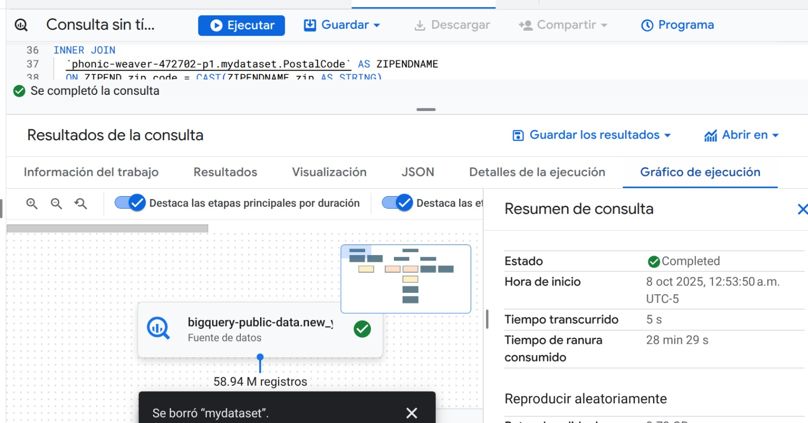
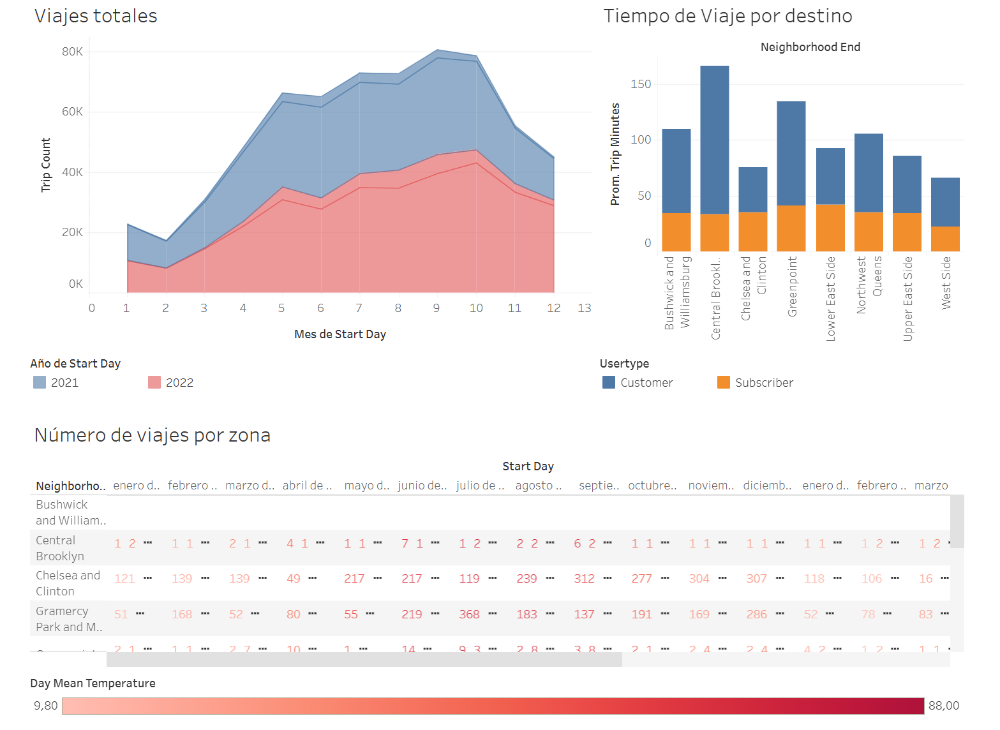
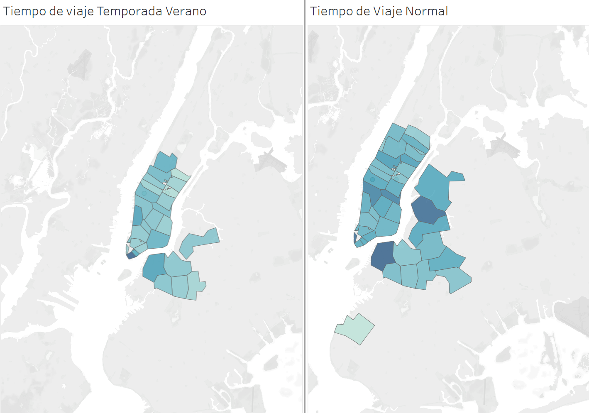

Cyclistic Project
Proyecto realizado por: Alexander Motoche
Colaboradores
- Alexander Motoche: Desarrollo e implementación de ciclo de vida de Business Intelligence (BI). Implementador de la arquitectura técnica del proyecto y documentación
Requisitos de los Stakeholders
Este documento presenta los requisitos de un proyecto de Business Intelligence para Cyclistic, centrado en las peticiones de los Stakeholders
Requisitos del Proyecto
Este documento detalla los requisitos específicos para un proyecto de Business Intelligence orientado a Cyclistic
Actividades y Estrategia
Este documento detalla los requisitos para un dashboard de Business Intelligence para Cyclistic, enfocado en mostrar métricas clave sobre las zonas de inicio y final de rutas.
Consulta SQL para el Análisis de Datos de Uso de Bicicletas
A continuación se presenta una consulta SQL utilizada para analizar los datos de uso de bicicletas en el proyecto. Esta consulta extrae información relevante sobre los viajes en bicicleta. Además, agrupa los viajes en intervalos de 10 minutos para obtener un análisis más granular.
SELECT
TRI.usertype,
ZIPSTART.zip_code AS zip_code_start,
ZIPSTARTNAME.borough borough_start,
ZIPSTARTNAME.neighborhood AS neighborhood_start,
ZIPEND.zip_code AS zip_code_end,
ZIPENDNAME.borough borough_end,
ZIPENDNAME.neighborhood AS neighborhood_end,
-- añadimos 7 años para parecer más actual
DATE_ADD(DATE(TRI.starttime), INTERVAL 7 YEAR) AS start_day,
DATE_ADD(DATE(TRI.stoptime), INTERVAL 7 YEAR) AS stop_day,
WEA.temp AS day_mean_temperature,
WEA.wdsp AS day_mean_wind_speed,
WEA.prcp day_total_precipitation,
-- Agrupadmos en intervalos de 10 minutos
ROUND(CAST(TRI.tripduration / 60 AS INT64), -1) AS trip_minutes,
COUNT(TRI.bikeid) AS trip_count
FROM
bigquery-public-data.new_york_citibike.citibike_trips AS TRI
INNER JOIN
bigquery-public-data.geo_us_boundaries.zip_codes ZIPSTART
ON ST_WITHIN(
ST_GEOGPOINT(TRI.start_station_longitude, TRI.start_station_latitude),
ZIPSTART.zip_code_geom)
INNER JOIN
bigquery-public-data.geo_us_boundaries.zip_codes ZIPEND
ON ST_WITHIN(
ST_GEOGPOINT(TRI.end_station_longitude, TRI.end_station_latitude),
ZIPEND.zip_code_geom)
INNER JOIN
bigquery-public-data.noaa_gsod.gsod20* AS WEA
ON PARSE_DATE("%Y%m%d", CONCAT(WEA.year, WEA.mo, WEA.da)) = DATE(TRI.starttime)
INNER JOIN
phonic-weaver-472702-p1.mydataset.PostalCode AS ZIPSTARTNAME
ON ZIPSTART.zip_code = CAST(ZIPSTARTNAME.zip AS STRING)
INNER JOIN
phonic-weaver-472702-p1.mydataset.PostalCode AS ZIPENDNAME
ON ZIPEND.zip_code = CAST(ZIPENDNAME.zip AS STRING)
WHERE
WEA.wban = '94728' -- CENTRAL PARK
-- Filtra por meses de verano
AND DATE(TRI.starttime) BETWEEN DATE('2015-07-01') AND DATE('2015-09-30')
Resultado de la Ejecución de la Consulta SQL
La imagen a continuación muestra los resultados de la consulta. Además, la salida de la consulta fue guardada para su posterior análisis.

Visualizaciones en Tableau
A continuación, se incluyen dos visualizaciones relacionadas con el análisis de los viajes en bicicleta, presentando los patrones de uso durante la temporada de verano y el tiempo de viaje en zonas específicas:
Análisis de Viajes Totales y Número de Viajes por Zona:

Mapa del Tiempo de Viaje por Temporada de Verano y Tiempo de Viaje Normal:

Puedes acceder a la visualización interactiva completa del proyecto a través del siguiente enlace: